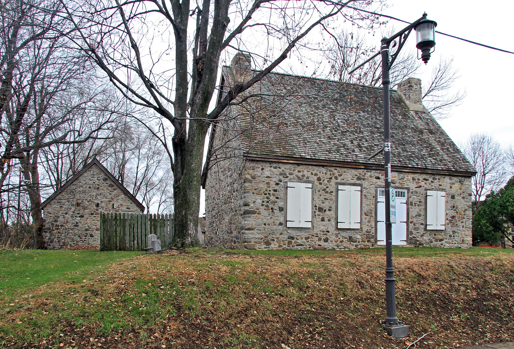

Stone house of the French tradition La maison de pierre de tradition française

A low fieldstone box of one and a half storeys under a steep two-slope roof, stacks rising inside the gable walls, openings placed where they were wanted rather than where symmetry asked for them. Three of them survive across three of the six West Island places — a trading post of 1669–71 at Lachine, a farm house of about 1700 at Baie-D'Urfé, and one of 1769–91 at Pointe-Claire — and all three are protected individually while nothing around them is. One record, three municipalities: the photograph on this card is Lachine's, and Baie-D'Urfé's and Pointe-Claire's stand beside it on the type page.
The Sulpicians became seigneurs of the island of Montréal in 1663 and conceded the côtes that run out to its western end; the houses built on those concessions were stone because stone was what the fields gave up and because fire and raiding made anything else a poor bet. What survives is very little. Lachine's is the oldest and least altered: two rectangular stone buildings put up in 1669–71 as a fur-trade post for Charles Le Moyne and Jacques Le Ber, restored in the 1980s toward their seventeenth-century appearance and now the Musée de Lachine. Baie-D'Urfé's was built about 1700 by Hubert Rangé dit Laviolette on a concession he bought in 1695, and then quietly rebuilt by the Pilon family between 1839 and 1874 — the walls raised, the roof pitch eased off, moulded chambranles and projecting eaves added in what RPCQ calls a taste imported after the Conquest. Pointe-Claire's went up between 1769 and 1791 on a censive conceded in 1722, and was altered again in 1828. Read together the three make the point the West Island pages keep making: the form is one form across three municipalities, the protection is three separate individual instruments granted in 1964, 2001 and 2001, and not one of them protects an ensemble.
What Répertoire du patrimoine culturel du Québec says about this type ›
- « Les deux bâtiments en pierre de plan rectangulaire s'élèvent sur un étage et sont coiffés d'un toit aigu à deux versants droits aux larmiers peu saillants. »
- « Fenêtre(s) : Rectangulaire, À battants, à petits carreaux »
- « La partie la plus ancienne présente un plan presque carré, comporte des murs en pierre chaulés sur trois côtés et s'élève sur un étage et demi. Elle est couverte d'un toit à deux versants droits aux larmiers débordants couvrant une galerie du côté sud. Deux cheminées s'élèvent dans la continuité des murs pignon. »
- « Construite au tournant du XVIIIe siècle, la maison possède des éléments qui se rattachent à la tradition architecturale d'inspiration française, comme le carré en pierre peu dégagé du sol et la disposition asymétrique des ouvertures. Le plan presque carré et les cheminées qui s'élèvent dans la continuité des murs pignon, plus particulièrement associés aux maisons de l'île de Montréal et des régions environnantes, sont aussi des caractéristiques de l'architecture de cette époque. »
- « La maison LeBer-LeMoyne, dont l'importance patrimoniale est exceptionnelle, a été reconnue par un classement en vertu de la Loi sur les biens culturels en 2001. Elle date du Régime français et est l'une des plus anciennes au Canada. Avec son site, elle rappelle la vocation agricole et commerciale des débuts de Lachine. » (Lachine, 19.E.4)
- « Le chemin du Lakeshore regroupe la plus grande densité de bâtiments d'intérêt patrimonial de l'arrondissement. Son parcours comprend d'anciennes maisons de ferme, des maisons bourgeoises et des villas d'été de la fin du XIXe siècle et du début du XXe siècle qui nous sont parvenues avec des degrés d'authenticité divers. » (Beaconsfield–Baie-D'Urfé, 4.I.1)
- « … le moulin banal (1709-1710), classé bien archéologique en 1983, la maison Hyacinthe-Jamme dit Carrière (vers 1780), classée monument historique en 1964 par le ministère des Affaires culturelles, ainsi que d'autres maisons des XVIIIe et XIXe siècles. » (Pointe-Claire, 3.1)
- Each of the three survivors sits on ground that predates the street grid around it. Le Ber-Le Moyne stands on a raised point of land beside lac Saint-Louis at the head of the Lachine rapids, on a slight mound planted with mature trees.
- The Baie-D'Urfé house stands at the back of its lot, about a hundred metres from the public road and close to the shore, its main front turned south to the lake and the îles Sainte-Geneviève — RPCQ reads that orientation as evidence that the chemin du Roy once ran between the house and the water.
- Pointe-Claire's house stands at the far end of a large treed lot that now isolates it from the postwar subdivision around it, on a censive conceded by the Sulpicians in 1722 along the côte Saint-Jean.
- A low stone carré on a near-square or short rectangular plan, one and a half storeys, sitting close to the ground. The Baie-D'Urfé carré measures 9.4 by 9.3 m.
- Steep two-slope roof with straight slopes. Eaves are shallow at Lachine, and carried out over a covered gallery at Baie-D'Urfé and Pointe-Claire — in both cases a nineteenth-century alteration, not an original feature.
- Ancillary buildings belong to the type where they survive - Lachine keeps a stone dépendance of the same date, and an 1781 census records a house, a barn and a stable at Baie-D'Urfé.
- Almost none in the original fabric. What ornament these houses carry — moulded wood chambranles, gable dormers, a neo-Gothic porch, a bell-cast eave — was added between about 1828 and 1874 to bring them up to date.
- Openings set out asymmetrically, which RPCQ names as a French-tradition trait at both Baie-D'Urfé and Pointe-Claire.
- Casement windows with small panes. At Pointe-Claire the south front is opened up for light while the north wall carries only two windows.
- Fieldstone throughout, laid up rubble. Pointe-Claire is left bare, and RPCQ names the absence of crépi as a Montréal-region trait; Baie-D'Urfé is whitewashed on three sides.
- Two chimney stacks carried up in the line of the gable walls — the trait RPCQ singles out as belonging "plus particulièrement" to the houses of the island of Montréal and its neighbouring regions.
- « Elle illustre ce type par son corps de logis bas en pierre, son élévation d'un étage et demi, son toit aigu à deux versants, ses deux cheminées logées dans les murs pignons, ses ouvertures disposées de manière asymétrique et ses fenêtres à battants à petits carreaux. »
- « Le plan presque carré et l'absence de crépi sont des éléments fréquemment associés à la maison d'inspiration française de la région de Montréal. »
- « Elle est l'une des rares maisons de ferme datant de la fin du XVIIIe siècle à subsister à l'intérieur des terres de Pointe-Claire. »
A thin record by design, and honest about it. None of the six West Island places has a per-type typology document — no inventory, no thesaurus, no per-type table — so this record is built from the three individual houses that do carry statutory records, plus the three 2005 Ville de Montréal évaluation cahiers, which characterise sectors and not building types. What that leaves empty: `window_proportion` is null because all three RPCQ fiches describe the windows as casements with small panes and none gives a proportion; `roof.pitch_deg` is null because the fiches say "aigu" and "à pente moyenne" and never a figure; `lot_width_m`, `setback_front_m`, `setback_side_m` and `front_yard_green_pct` are null because no source measures a lot or a setback anywhere in the West Island; `sectors` is null because a shared record cannot carry sector codes that exist in only one of its places. `storeys` is entered as 1.5 from the RPCQ "Nombre d'étages" field, which reads 1½ for all three — note that the Le Ber-Le Moyne description text contradicts its own data field, saying the buildings "s'élèvent sur un étage". The canonical is `french-urban-house-stone` rather than `french-rural-house-1st-hip` even though all three are farm or trading-post houses in open country: the discriminant in this vocabulary is fabric and roof, not siting, and all three are stone under a straight two-slope roof with stacks in the gable walls, where the rural canonical is pièce-sur-pièce timber under a hip carried to the wall head with no cellar. RPCQ says as much itself, calling the nearby Sainte-Anne example « la maison rurale d'inspiration urbaine, fréquente dans la région de Montréal et les régions avoisinantes ». The phase is p1 and marked provisional: Lachine's house is 1669–71 and Baie-D'Urfé's about 1700, both inside p1, but Pointe-Claire's classed survivor was built between 1769 and 1791, inside p2 — RPCQ states plainly that this building tradition « se poursuit au-delà de la Conquête (1760) », so the type is filed at its origin and the reader is told the fabric outlives it.
- All three houses are protected individually, and none of the three village or shore ensembles around them is. Lachine's is a classed site patrimonial (2001) covering the exteriors and the land; Pointe-Claire's is a classed immeuble patrimonial (1964-08-12) covering exterior, interior and land; Baie-D'Urfé's is a municipal citation (2001) covering only the exterior envelope of the oldest, eastern section.
- 1, chemin du Musée, Lachine (Maison Le Ber-Le Moyne with its dépendance, 1669–71; classed site patrimonial 2001; now the Musée de Lachine.)
- 20122, chemin Lakeshore, Baie-D'Urfé (Maison Rangé-dit-Laviolette, about 1700, enlarged and modernised 1839–74; cited immeuble patrimonial 2001, the citation covering only the oldest eastern section.)
- 152, avenue de Concord Crescent, Pointe-Claire (Maison Hyacinthe-Jamme-dit-Carrière, built between 1769 and 1791, basement raised 1828, restored 1968 by Victor Depocas; classed 1964-08-12.)